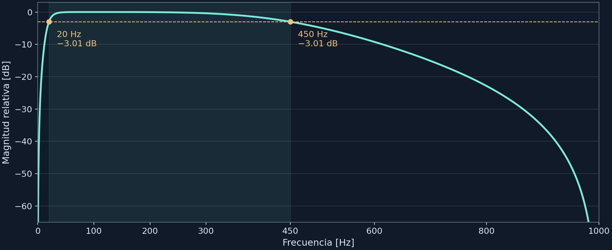

Cortes [dB]: [-3.0103 -3.0103]Radio máximo: 0.956797 | Error máximo: 5.21e-14Ingeniería Biomédica
2026-11-10
Se debe diseñar un filtro que conserve la mayor parte de la actividad muscular útil y atenuar:
La señal electromiográfica superficial no es un potencial aislado. Es la suma interferencial de muchos potenciales de acción de unidades motoras. Cada unidad motora activa fibras musculares, y esas fibras generan potenciales de acción que se propagan por la membrana.
La conducción es electroquímica y depende de la conductividad de los tejidos que están entre la fibra muscular y el electrodo: músculo, grasa y piel. Esos medios no son perfectos, así que la señal se va atenuando y dispersando a medida que se aleja de la fuente.
La combinación de todas esas contribuciones (múltiples unidades motoras, conducción y filtrado biológico) hace que la señal EMG superficial sea una señal compleja, con forma de onda irregular y espectro que se extiende en frecuencia, pero con una banda donde se concentra la mayor parte de la energía.
En electromiografía superficial, la mayor parte de la energía útil generada por la actividad muscular detectable en piel se concentra por debajo de unos 400–500 Hz.
| Elemento a atenuar | Zona espectral | Decisión de diseño |
|---|---|---|
| Deriva DC | 0 Hz y muy baja frecuencia | Usar corte inferior \(f_L\) |
| Artefactos de movimiento | Baja frecuencia, típicamente \(<20\text{ Hz}\) | Rechazarlos con \(f_L = 20\text{ Hz}\) |
| Ruido de alta frecuencia | Por encima de la banda muscular útil | Atenuarlo con \(f_H = 450\text{ Hz}\) |
| Contenido cercano a Nyquist | Cerca de \(f_s/2\) | Dejar margen entre \(f_H\) y \(f_N\) |
La EMG cruda contiene componentes de baja frecuencia que no suelen representar activación muscular útil:
Por eso se usa un pasaaltas alrededor de 20 Hz.
\[ f_L = 20\text{ Hz} \]
Es una decisión conservadora: elimina deriva sin recortar demasiado la EMG fisiológica.
La mayor parte de la energía útil de EMG superficial está por debajo de 450–500 Hz.
Elegimos:
\[ f_H = 450\text{ Hz} \]
porque con:
\[ f_s = 2000\text{ Hz} \]
el límite de Nyquist es:
\[ f_N = \frac{f_s}{2} = 1000\text{ Hz} \]
Así queda margen suficiente entre 450 Hz y 1000 Hz para la transición del filtro.
Un filtro FIR con transición estrecha puede necesitar muchos coeficientes.
Un IIR logra una pendiente razonable con bajo orden.
Ventajas:
Desventajas:
Por eso se usa formato SOS.
Se elige Butterworth porque tiene magnitud plana en la banda pasante.
No introduce ondulación como Chebyshev o elíptico.
Esto es útil si queremos preservar amplitudes relativas de EMG.
La prioridad aquí no es lograr la transición más agresiva, sino evitar alterar artificialmente la amplitud dentro de la banda útil.
Trabajaremos con EMG superficial registrada en laboratorio.
| Parámetro | Valor elegido | Motivo |
|---|---|---|
| Frecuencia de muestreo | 2000 Hz | Suficiente para analizar hasta 450–500 Hz |
| Banda útil | 20–450 Hz | Banda típica para EMG superficial |
| Tipo de filtro | IIR | Eficiente y de bajo orden |
| Familia | Butterworth | Magnitud plana en banda pasante |
| Implementación | SOS | Más estable numéricamente |
Usaremos un diseño automático con buttord.
Definimos:
\[ f_p = [20, 450]\text{ Hz} \]
\[ f_s^{stop} = [5, 800]\text{ Hz} \]
\[ A_p = 1\text{ dB}, \quad A_s = 30\text{ dB} \]
Interpretación:
Para diseño digital, las frecuencias se comparan con Nyquist:
\[ f_N = \frac{2000}{2} = 1000\text{ Hz} \]
\[ W_L = \frac{20}{1000} = 0.02 \]
\[ W_H = \frac{450}{1000} = 0.45 \]
En SciPy podemos pasar fs=2000, así no hace falta normalizar manualmente.
Para diseñar a mano se parte del dominio analógico equivalente:
\[ \Omega = 2f_s\tan\left(\frac{\pi f}{f_s}\right) \]
Con \(f_s=2000\text{ Hz}\):
\[ \Omega_{p1}=125.705 \]
\[ \Omega_{p2}=3416.323 \]
\[ \Omega_{r1}=31.417 \]
\[ \Omega_{r2}=12310.734 \]
Ancho de banda:
\[ B = \Omega_{p2}-\Omega_{p1} \]
\[ B = 3416.323 - 125.705 = 3290.618 \]
Frecuencia central:
\[ \Omega_0 = \sqrt{\Omega_{p1}\Omega_{p2}} \]
\[ \Omega_0 = \sqrt{125.705(3416.323)} = 655.324 \]
La transformación es:
\[ \Omega_L = \left| \frac{\Omega^2-\Omega_0^2}{B\Omega} \right| \]
Para las bandas de rechazo:
\[ \Omega_{Lr1} = \left| \frac{\Omega_{r1}^2-\Omega_0^2}{B\Omega_{r1}} \right| =4.145 \]
\[ \Omega_{Lr2} = \left| \frac{\Omega_{r2}^2-\Omega_0^2}{B\Omega_{r2}} \right| =3.731 \]
Se usa el caso más exigente:
\[ \Omega_{Lr}=3.731 \]
Para Butterworth:
\[ |H(j\Omega)|^2 = \frac{1}{1+\left(\frac{\Omega}{\Omega_c}\right)^{2N}} \]
Primero:
\[ \epsilon^2 = 10^{A_p/10}-1 \]
\[ \epsilon^2 = 10^{0.1}-1 = 0.2589 \]
El orden mínimo es:
\[ N \geq \frac{ \log_{10} \left( \frac{10^{A_r/10}-1}{10^{A_p/10}-1} \right) }{ 2\log_{10}(\Omega_{Lr}) } \]
\[ N \geq \frac{ \log_{10} \left( \frac{10^{30/10}-1}{10^{1/10}-1} \right) }{ 2\log_{10}(3.731) } \]
\[ N \geq 3.93 \]
Por tanto:
\[ \boxed{N=4} \]
Este es el orden del prototipo pasabajas.
Como el filtro final es pasabanda:
\[ \boxed{N_{\text{digital}}=2N=8} \]
Se fija la pérdida de 1 dB en la banda pasante:
\[ \Omega_c = \frac{1}{\epsilon^{1/N}} \]
equivalentemente:
\[ \Omega_c = \frac{1}{(10^{A_p/10}-1)^{1/(2N)}} \]
\[ \Omega_c = \frac{1}{(0.2589)^{1/8}} =1.184 \]
Se resuelve:
\[ \left| \frac{\Omega^2-\Omega_0^2}{B\Omega} \right| = \Omega_c \]
Las dos soluciones son:
\[ \Omega_{c1} = \frac{ -\Omega_c B + \sqrt{(\Omega_c B)^2+4\Omega_0^2} }{2} \]
\[ \Omega_{c2} = \frac{ \Omega_c B + \sqrt{(\Omega_c B)^2+4\Omega_0^2} }{2} \]
\[ \Omega_{c1}=107.272 \]
\[ \Omega_{c2}=4003.376 \]
Regresando al dominio digital:
\[ f = \frac{f_s}{\pi} \tan^{-1}\left(\frac{\Omega}{2f_s}\right) \]
\[ f_{c1}=17.07\text{ Hz} \]
\[ f_{c2}=500.27\text{ Hz} \]
Estas no son la banda útil final; son las frecuencias críticas equivalentes que producen:
\[ -1\text{ dB en }20\text{ Hz y }450\text{ Hz} \]
El filtro digital queda como producto de secciones de segundo orden:
\[ H(z)= \prod_{k=1}^{4} \frac{ b_{0k}+b_{1k}z^{-1}+b_{2k}z^{-2} }{ 1+a_{1k}z^{-1}+a_{2k}z^{-2} } \]
| Sección | \(b_0\) | \(b_1\) | \(b_2\) | \(a_1\) | \(a_2\) |
|---|---|---|---|---|---|
| 1 | 0.084415 | 0.168831 | 0.084415 | -0.048293 | 0.044628 |
| 2 | 1.000000 | 2.000000 | 1.000000 | -0.009318 | 0.465001 |
| 3 | 1.000000 | -2.000000 | 1.000000 | -1.899161 | 0.902165 |
| 4 | 1.000000 | -2.000000 | 1.000000 | -1.958473 | 0.961333 |
Cada sección se aplica como:
\[ y_k[n] = b_{0k}x_k[n] + b_{1k}x_k[n-1] + b_{2k}x_k[n-2] - a_{1k}y_k[n-1] - a_{2k}y_k[n-2] \]
La salida de una sección alimenta la siguiente:
\[ x_{k+1}[n]=y_k[n] \]
La salida final es:
\[ y[n]=y_4[n] \]
En las frecuencias de paso:
\[ |H(20\text{ Hz})| \approx -1\text{ dB} \]
\[ |H(450\text{ Hz})| \approx -1\text{ dB} \]
En las frecuencias de rechazo:
\[ |H(5\text{ Hz})| \approx -43.5\text{ dB} \]
\[ |H(800\text{ Hz})| \approx -39.9\text{ dB} \]
Por tanto:
\[ A_r > 30\text{ dB} \]
Filtro diseñado:
\[ \boxed{ \text{IIR Butterworth pasabanda de orden 8} } \]
Banda útil EMG:
\[ \boxed{ 20\text{ Hz} \leq f \leq 450\text{ Hz} } \]
Frecuencia de muestreo:
\[ \boxed{ f_s=2000\text{ Hz} } \]
Atenuación:
\[ \boxed{ A_p=1\text{ dB}, \qquad A_r \geq 30\text{ dB} } \]
Implementación recomendada:
\[ \boxed{ \text{cascada de secciones de segundo orden} } \]
Con \(C=2f_s=4000\,\mathrm{s}^{-1}\), la transformación bilineal relaciona la frecuencia digital \(\omega\) con la analógica \(\Omega\).
\[ \omega_i=2\pi\frac{f_i}{f_s},\qquad \Omega_i=C\tan\!\left(\frac{\omega_i}{2}\right) \]
| Corte | \(\omega_i\) [rad/muestra] | \(\Omega_i\) [rad/s] |
|---|---|---|
| \(20\,\mathrm{Hz}\) | \(0.062832\) | 125.705 |
| \(450\,\mathrm{Hz}\) | \(1.413717\) | 3416.323 |
El prewarping hace que los cortes analógicos se ubiquen en las frecuencias digitales solicitadas después de la transformación.
La ley Butterworth de orden 2 es \(|H(j\nu)|^2=(1+\nu^4)^{-1}\). Como \(u=j\nu\) implica \(u^4=\nu^4\), se factoriza \(1+u^4\) y se conservan las raíces del semiplano izquierdo.
\[ \begin{aligned} H_{\mathrm{LP}}(u) &=\frac{1}{(u-p_1)(u-p_2)} =\frac{1}{u^2+\sqrt{2}\,u+1},\\[4pt] |H_{\mathrm{LP}}(j\nu)|^2&=\frac{1}{1+\nu^4}. \end{aligned} \]
Los polos son \(p_1=e^{j3\pi/4}\) y \(p_2=e^{j5\pi/4}\). En \(\nu=\pm1\), la potencia relativa es \(1/2\).
\[ B=\Omega_2-\Omega_1=\text{3290.618}\,\mathrm{rad/s},\qquad \Omega_0=\sqrt{\Omega_1\Omega_2}=\text{655.324}\,\mathrm{rad/s} \]
Se sustituye la variable normalizada \(u\) por \((s^2+\Omega_0^2)/(Bs)\). Para \(s=j\Omega\), la frecuencia normalizada es
\[ \nu=\frac{\Omega^2-\Omega_0^2}{B\Omega} \quad\Longrightarrow\quad \nu(\Omega_1)=-1,\quad \nu(\Omega_0)=0,\quad \nu(\Omega_2)=1. \]
\[ H_{\mathrm{BP}}(s)= \frac{B^2s^2}{(s^2+\Omega_0^2)^2+\sqrt{2}\,Bs(s^2+\Omega_0^2)+B^2s^2}. \]
Cada polo \(p_k\) del prototipo genera dos polos analógicos \(s_{k,\pm}\).
\[ s^2-Bp_k s+\Omega_0^2=0 \quad\Longrightarrow\quad s_{k,\pm}=\frac{Bp_k\pm\sqrt{(Bp_k)^2-4\Omega_0^2}}{2}. \]
\[ s=C\frac{1-z^{-1}}{1+z^{-1}} \quad\Longleftrightarrow\quad z=\frac{C+s}{C-s}. \]
La frecuencia digital de máxima ganancia se obtiene con la inversa del prewarping.
\[ f_0=\frac{f_s}{\pi}\arctan\!\left(\frac{\Omega_0}{C}\right) =\text{103.380}\,\mathrm{Hz}. \]
Se agrupan los polos en pares conjugados y se asigna un cero en \(z=1\) y otro en \(z=-1\) a cada sección.
\[ H_i(z)=\frac{g(1-z^{-2})}{1-2\operatorname{Re}(r_i)z^{-1}+|r_i|^2 z^{-2}}, \qquad H(z)=H_1(z)H_2(z). \]
Cada fila de la matriz SOS sigue el orden \([b_0,b_1,b_2,a_0,a_1,a_2]\). Por ahora, \(g=1\) en ambas filas.
Sea \(\widetilde H\) la respuesta de la cascada con \(g=1\). Al aplicar el mismo \(g\) a cada numerador, la magnitud total se multiplica por \(g^2\).
\[ g=|\widetilde H(e^{j2\pi f_0/f_s})|^{-1/2} \quad\Rightarrow\quad |H(e^{j2\pi f_0/f_s})|=1. \]
| SOS | \(b_0\) | \(b_1\) | \(b_2\) | \(a_0\) | \(a_1\) | \(a_2\) |
|---|---|---|---|---|---|---|
| 1 | 0.480944882 | 0.000000000 | -0.480944882 | 1.000000000 | -1.911406179 | 0.915460901 |
| 2 | 0.480944882 | 0.000000000 | -0.480944882 | 1.000000000 | -0.228688419 | 0.200311977 |
Para cada sección se aplica la recurrencia, con estados inicialmente en cero.
\[ y_i[n]=b_{0,i}\,x_i[n]+b_{2,i}\,x_i[n-2] -a_{1,i}\,y_i[n-1]-a_{2,i}\,y_i[n-2]. \]
La primera sección recibe la señal original y la segunda recibe \(x_2[n]=y_1[n]\). Los términos con salidas pasadas realimentan el filtro.
La tabla redondea a nueve decimales. El código conserva la precisión de punto flotante.

La respuesta se evalúa directamente a partir de las dos secciones. En continua y Nyquist hay ceros teóricos. La escala vertical se recorta a \(-65\,\mathrm{dB}\).
Cortes [dB]: [-3.0103 -3.0103]Radio máximo: 0.956797 | Error máximo: 5.21e-14SciPy se usa aquí como referencia. Se compara la respuesta compleja total porque dos realizaciones equivalentes pueden agrupar ceros y distribuir ganancia de forma distinta.
respuesta_sos(60, sos) antes de interpretar el espectro.fs = 2000.0
# Banda pasante deseada para EMG superficial
fp = [20.0, 450.0]
# Bandas de rechazo elegidas con transiciones razonables
fsb = [5.0, 800.0]
# Pérdida máxima en banda pasante y atenuación mínima en rechazo
Ap = 1.0 # dB
As = 30.0 # dB
N, Wn = buttord(
wp=fp,
ws=fsb,
gpass=Ap,
gstop=As,
fs=fs
)
N, Wnbuttord devuelve el orden mínimo que satisface las especificaciones.
Si el orden sale alto, no significa que el diseño esté mal.
Significa que las transiciones o la atenuación pedida son exigentes.
Para EMG práctica:
Por eso implementaremos en SOS.
Usar output="sos" evita problemas de precisión que pueden aparecer con coeficientes b, a en filtros IIR de orden alto.
w, h = sosfreqz(sos, worN=4096, fs=fs)
mag_db = 20 * np.log10(np.maximum(np.abs(h), 1e-12))
plt.figure(figsize=(9, 4))
plt.plot(w, mag_db)
plt.axvline(20, linestyle="--")
plt.axvline(450, linestyle="--")
plt.axhline(-1, linestyle=":")
plt.axhline(-30, linestyle=":")
plt.xlim(0, 1000)
plt.ylim(-80, 5)
plt.xlabel("Frecuencia [Hz]")
plt.ylabel("Magnitud [dB]")
plt.title("Respuesta en frecuencia del filtro pasabanda IIR")
plt.grid(True)
plt.show()Creamos una señal de prueba con:
rng = np.random.default_rng(7)
T = 4.0
t = np.arange(0, T, 1/fs)
drift = 0.4 * np.sin(2*np.pi*2*t)
line_noise = 0.15 * np.sin(2*np.pi*60*t)
emg_like = (
0.25*np.sin(2*np.pi*45*t) +
0.18*np.sin(2*np.pi*120*t) +
0.12*np.sin(2*np.pi*260*t)
)
wide_noise = 0.08 * rng.normal(size=len(t))
hf_noise = 0.08 * np.sin(2*np.pi*700*t)
x = drift + line_noise + emg_like + wide_noise + hf_noiseHay dos formas comunes de aplicar el filtro.
Para tiempo real:
Para análisis offline:
Decisión:
sosfilt: introduce retardo de fasesosfiltfilt: fase cero, pero no sirve para tiempo realEn este ejemplo usamos sosfiltfilt porque es análisis offline.
f_raw, P_raw = welch(x, fs=fs, nperseg=1024)
f_filt, P_filt = welch(y, fs=fs, nperseg=1024)
plt.figure(figsize=(9, 4))
plt.semilogy(f_raw, P_raw, label="Cruda")
plt.semilogy(f_filt, P_filt, label="Filtrada")
plt.axvline(20, linestyle="--")
plt.axvline(450, linestyle="--")
plt.xlim(0, 1000)
plt.xlabel("Frecuencia [Hz]")
plt.ylabel("PSD")
plt.title("Efecto espectral del filtro")
plt.legend()
plt.grid(True)
plt.show()El filtro elimina:
Pero no elimina completamente 50/60 Hz, porque 60 Hz está dentro de la banda EMG.
Por eso un notch de red no debe añadirse automáticamente.
Debe usarse solo si la interferencia de red domina y afecta el análisis.
No incluimos notch por defecto.
Motivo:
\[ 50/60\text{ Hz} \in [20, 450]\text{ Hz} \]
Un notch elimina interferencia eléctrica, pero también destruye contenido EMG real alrededor de esa frecuencia.
Decisión práctica:
def design_emg_bandpass_iir(
fs,
passband=(20.0, 450.0),
stopband=(5.0, 800.0),
gpass=1.0,
gstop=30.0
):
"""
Diseña un filtro pasabanda IIR Butterworth para EMG superficial.
Parámetros:
fs : frecuencia de muestreo [Hz]
passband : banda útil EMG [Hz]
stopband : banda de rechazo [Hz]
gpass : pérdida máxima en banda pasante [dB]
gstop : atenuación mínima en rechazo [dB]
Retorna:
sos : secciones de segundo orden
N : orden del filtro
Wn : frecuencias críticas calculadas
"""
N, Wn = buttord(
wp=list(passband),
ws=list(stopband),
gpass=gpass,
gstop=gstop,
fs=fs
)
sos = butter(
N=N,
Wn=Wn,
btype="bandpass",
fs=fs,
output="sos"
)
return sos, N, WnAntes de usar el filtro en datos reales, revisar:
Nunca aplicar un filtro EMG sin reportar:
\[ f_s,\quad f_L,\quad f_H,\quad \text{orden},\quad \text{familia},\quad \text{método de aplicación} \]
Filtro elegido:
\[ \text{IIR Butterworth pasabanda} \]
\[ 20\text{ Hz} \leq f \leq 450\text{ Hz} \]
\[ f_s = 2000\text{ Hz} \]
Implementación:
Justificación:
filtfilt evita desfase en análisis offline